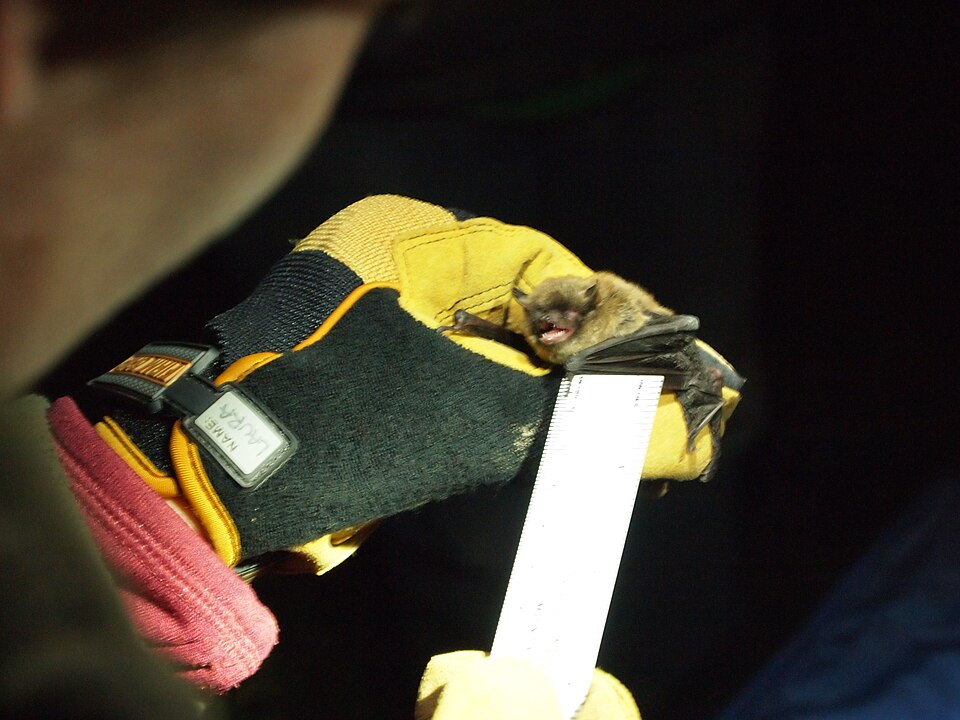
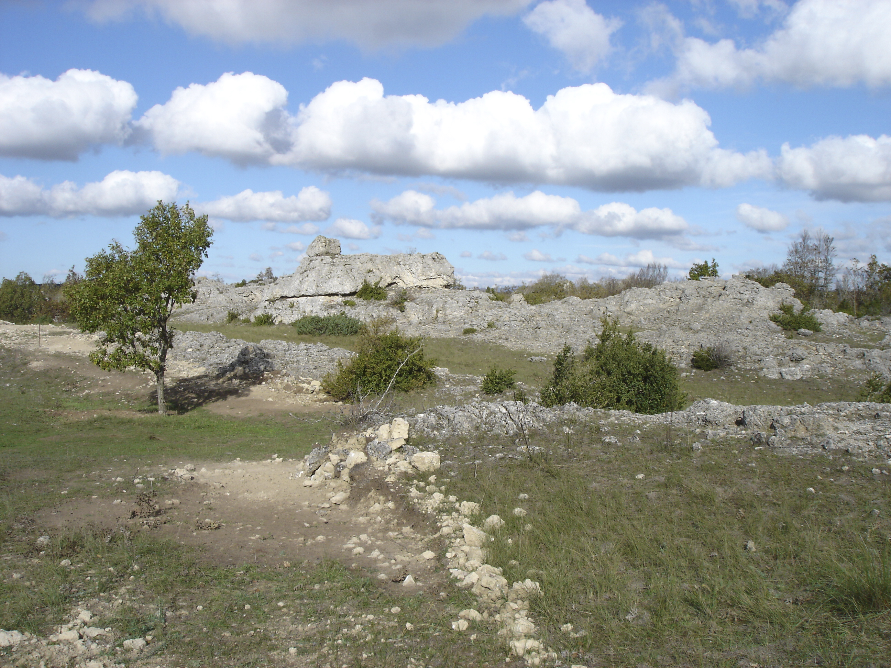
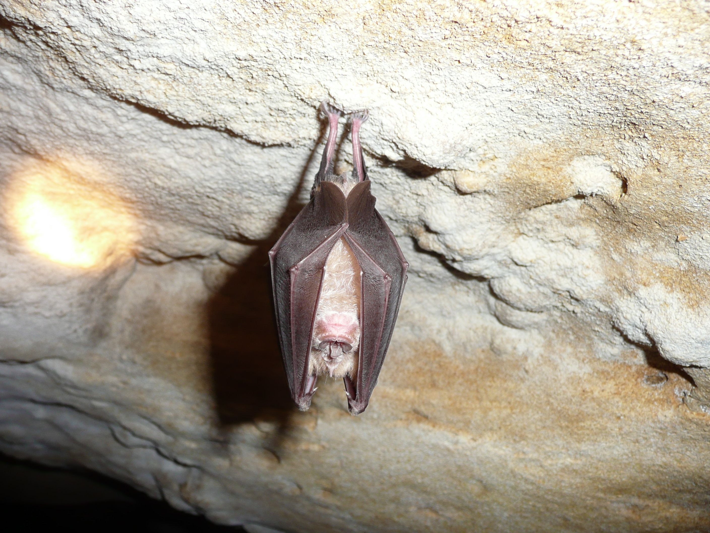

Ce week-end, seize bénévoles ont rejoint l'équipe du CPIE des Causses Méridionaux pour prospecter des bâtiments susceptibles d'accueillir des chauves-souris.
Répartis en plusieurs groupes, les participants ont sillonné différentes communes du territoire. Grâce à l'accueil des propriétaires et des habitants, ils ont pu examiner des granges, des combles, des caves et quelques édifices communaux.
Des indices parfois discrets
La présence des chauves-souris ne se traduit pas toujours par l'observation directe d'animaux. Guano, traces d'urine, restes de repas ou accès favorables peuvent également révéler l'utilisation d'un bâtiment.
Chaque observation a été relevée avec précaution. Les informations sensibles resteront confidentielles : le site public présentera uniquement des résultats synthétiques à l'échelle communale.
« Le but n'est pas seulement de compter des chauves-souris, mais de créer un réseau d'habitants attentifs à leur présence et capables de nous signaler de nouveaux gîtes. »
Une mobilisation essentielle
Ces prospections demandent beaucoup de temps et bénéficient directement de la participation des bénévoles. Leur connaissance des villages, les échanges avec les habitants et la diversité de leurs regards permettent de multiplier les secteurs visités.


Et maintenant ?
Les résultats seront intégrés à la base de données Chiro'Larzac et croisés avec les inventaires acoustiques et les prospections souterraines. De nouvelles journées collectives seront proposées au cours du programme.
Tu pourras remplacer ce texte très simplement par ton véritable compte rendu, insérer tes photos et modifier les trois chiffres mis en avant.